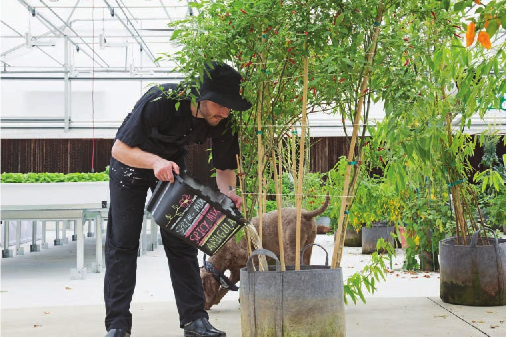

The flushed hydroponic nutrient solution can be used to fertilize a traditional soil garden. FLUSHING EC is a great general reference for nutrient content in a hydroponic reservoir, but unfortunately it does not tell the whole story. Not all nutrients are taken up by plants at the same rate. Over time, some nutrients will accumulate and others will be rapidly depleted, resulting in an imbalanced nutrient solution. Large commercial hydroponic farms send out water samples to testing facilities to get exact quantities of each nutrient in the reservoir and the grower then adjusts the fertilizer inputs accordingly. To perform these fertilizer adjustments requires complex chemistry and a deep understanding of a crop's specific nutrient requirements. The far-easier alternative is to periodically flush a hydroponic system. Flushing is the process of removing the existing nutrient solution and refilling the system with fresh water and then adding new fertilizer. The frequency of flushing is dependent on many factors, including crop, environment, system, fertilizer, and water quality. Most gardeners find success using the following rule of thumb to figure out flush frequency: “Flush a reservoir when the quantity of water added to top off a reservoir is equivalent to the size of the reservoir.” Example: A 40-gallon reservoir loses 5 gallons a day to evapotranspiration (plant transpiration and reservoir evaporation). The grower adds 5 gallons to the reservoir daily to top off the reservoir for water loss. After 8 days the grower adds a total of 40 gallons (8 days x 5 gallons = 40 gallons), the same volume of water as the original reservoir size. The grower should flush the reservoir every 8 days. This rule of thumb is very conservative and many growers can flush less frequently when using traditional hydroponic fertilizers. This rule is useful, however, forgetting a general guideline. The water flushed from a hydroponic system does not need to be put down the drain. Many gardeners use the old nutrient solution to water their potted plants, raised beds, lawn, or trees. A traditional garden is a great companion to a hydroponic garden, and it can be a home for old nutrient solutions, composted plants, and substrates. 160 DIY HYDROPONIC GARDENS
